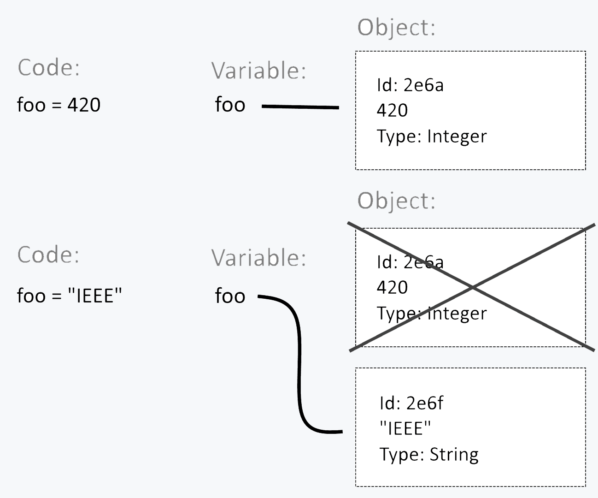

name: slide_title class: slide_title, center, middle layout: true {{content}} --- name: slide_contents class: slide_contents layout: true {{content}} --- name: slide_section class: slide_section, center, middle layout: true {{content}} --- name: slide_normal class: slide_normal, left, top layout: true {{content}} --- template: slide_title # Workshop Introduction to Python 3 --- template: slide_contents # Contents 1. [Interpreter](#interpreter) 1. [Variables](#variables) 1. [Data Types](#data_types) 1. [Flow Control](#flow_control) 1. [Data Structures](#data-structures) 1. [Iteration](#iteration) 1. [Functions](#functions) 1. [Comprehensions and Generators](#comprehensions_and_generators) 1. [Modules](#modules) --- template: slide_section name: interpreter # Interpreter --- template: slide_normal ## REPL The **REPL** (Read Evaluate Print Loop) runs on a command line and can be called through `python`. *Warning:* As python is a language where tabs have meaning, extra spaces or tabs before the input will result in an error. ```py Python 3.7.4 (tags/v3.7.4:e09359112e, Jul 8 2019, 19:29:22) [MSC v.1916 64 bit (AMD64)] on win32 Type "help", "copyright", "credits" or "license" for more information. >>> print("Hello World") Hello World ``` To exit the REPL type **quit()**. Certain OS specific keybinds also work, in windows Ctrl+Z and in Unix Ctrl+D. ??? REPL: It loops while awaiting for an input, interpreting it and printing its result. Multilne: New line and keep writing (symbol changes from `>>>` to `...`). Comments:'#'. Brincar com o REPL. --- ## Useful REPL Functions: ## dir This funcion returns the attributes of an object. For example, to know all the attributes of a string: ```py >>> dir("anyString") # or dir(str) ['__add__', '__class__', '__contains__', '__delattr__', '__dir__', '__doc__', '__eq__', '__format__', '__ge__', '__getattribute__', '__getitem__', '__getnewargs__', '__gt__', '__hash__', '__init__', '__init_subclass__', '__iter__', '__le__', '__len__', '__lt__', '__mod__', '__mul__', '__ne__', '__new__', '__reduce__', '__reduce_ex__', '__repr__', '__rmod__', '__rmul__', '__setattr__', '__sizeof__', '__str__', '__subclasshook__', 'capitalize', 'casefold', 'center', 'count', 'encode', 'endswith', 'expandtabs', 'find', 'format', 'format_map', 'index', 'isalnum', 'isalpha', 'isascii', 'isdecimal', 'isdigit', 'isidentifier', 'islower', 'isnumeric', 'isprintable', 'isspace', 'istitle', 'isupper', 'join', 'ljust', 'lower', 'lstrip', 'maketrans', 'partition', 'replace', 'rfind', 'rindex', 'rjust', 'rpartition', 'rsplit', 'rstrip', 'split', 'splitlines', 'startswith', 'strip', 'swapcase', 'title', 'translate', 'upper', 'zfill'] ``` This function can help you get all the attributes when your IDE doesn't show it or when you don't have access to the internet. --- ## help Documentation built-in python itself! Calling `help()` without arguments will bring up an interactive menu (*tip:* experiment calling it from the REPL) Calling `help()` with an argument will give that argument's documentation: - With a **variable** in the argument it will assume its datatype as the argument; - With `int`, `str` or `float`, it will yield information about the data types; - With a **class**, **function** or **method**, it will yield even more information (*see next slide*). **Note**: In windows, sometimes too much information will show up, if you want to stop the help function in the REPL simply type Ctrl+C to stop it. --- ## Calling help() with a method ```py >>> help(str.split) Help on method_descriptor: split(self, /, sep=None, maxsplit=-1) Return a list of the words in the string, using sep as the delimiter string. sep The delimiter according which to split the string. None (the default value) means split according to any whitespace, and discard empty strings from the result. maxsplit Maximum number of splits to do. -1 (the default value) means no limit. ``` --- template: slide_section name: variables # Variables --- template: slide_normal ## Variables as Objects In Python all variables point to objects with 3 parts: id, value and type. As variables are light, reusing them doesn't really improve memory usage. We recommend you keep your variable types consistent to avoid confusing code. <p align="center">  </p> --- ## Garbage Collection The explanation for the reassigned objects being deleted is that every object has a reference count, the number of times it is referenced. This number is always positive and once it reaches zero, the garbage collector is called to free the memory used by that object, efectively making it disappear. If you ever wish to know this reference count use the following code: ```py >>> import sys >>> name = "IEEE" >>> sys.getrefcount(name) 2 ``` Please note that, as the documentation says, the reference count returned is generally one higher than you might expect, because it includes the (temporary) reference as an argument to getrefcount(). --- ## Variable Naming Python enforces that a ***variable should never have the name of a keyword or start with numbers***, doing so will result in a syntax error: ```py >>> if = "if" File "<stdin>", line 1 if = "if" ^ SyntaxError: invalid syntax ``` **Note**: For a list of all keywords that will produce a syntax error: ```py >>> import keyword >>> print(keyword.kwlist) ['False', 'None', 'True', 'and', 'as', 'assert', 'async', 'await', 'break', 'class', 'continue', 'def', 'del', 'elif', 'else', 'except', 'finally', 'for', 'from', 'global', 'if', 'import', 'in', 'is', 'lambda', 'nonlocal', 'not', 'or', 'pass', 'raise', 'return', 'try', 'while', 'with', 'yield'] ``` --- ## Variable Naming Other naming conventions are not mandatory, but are considered good practice: - Separate words in variable names either with underscores (big_variable) or with capital letters (bigVariable). Use only one of these throughout your code. - Don't override built-ins. Although built-in words could be used for a variable, doing this will not allow you to access them again and is considered a bad practice. The only way to use that built-in word again is through the `__builtins__` module. Many can be used by accident, such as **dict**, **id**, **list**, **min**, **max** or **str**. **Note**: For a list of all built-ins that you should avoid: ```py >>> dir(__builtins__) ['ArithmeticError', 'AssertionError', 'AttributeError', 'BaseException', 'BlockingIOError', 'BrokenPipeError', 'BufferError', 'BytesWarning', 'ChildProcessError', 'ConnectionAbortedError', 'ConnectionError', 'ConnectionRefusedError', 'ConnectionResetError', 'DeprecationWarning', 'EOFError', 'Ellipsis', 'EnvironmentError', 'Exception', 'False', 'FileExistsError', 'FileNotFoundError', 'FloatingPointError', 'FutureWarning', 'GeneratorExit', 'IOError', 'ImportError', 'ImportWarning', 'IndentationError', 'IndexError', 'InterruptedError', 'IsADirectoryError', 'KeyError', 'KeyboardInterrupt', 'LookupError', 'MemoryError', 'ModuleNotFoundError', 'NameError', 'None', 'NotADirectoryError', 'NotImplemented', 'NotImplementedError', 'OSError', 'OverflowError', 'PendingDeprecationWarning', 'PermissionError', 'ProcessLookupError', 'RecursionError', 'ReferenceError', 'ResourceWarning', 'RuntimeError', 'RuntimeWarning', 'StopAsyncIteration', 'StopIteration', 'SyntaxError', 'SyntaxWarning', 'SystemError', 'SystemExit', 'TabError', 'TimeoutError', 'True', 'TypeError', 'UnboundLocalError', 'UnicodeDecodeError', 'UnicodeEncodeError', 'UnicodeError', 'UnicodeTranslateError', 'UnicodeWarning', 'UserWarning', 'ValueError', 'Warning', 'WindowsError', 'ZeroDivisionError', '_', '__build_class__', '__debug__', '__doc__', '__import__', '__loader__', '__name__', '__package__', '__spec__', 'abs', 'all', 'any', 'ascii', 'bin', 'bool', 'breakpoint', 'bytearray', 'bytes', 'callable', 'chr', 'classmethod', 'compile', 'complex', 'copyright', 'credits', 'delattr', 'dict', 'dir', 'divmod', 'enumerate', 'eval', 'exec', 'exit', 'filter', 'float', 'format', 'frozenset', 'getattr', 'globals', 'hasattr', 'hash', 'help', 'hex', 'id', 'input', 'int', 'isinstance', 'issubclass', 'iter', 'len', 'license', 'list', 'locals', 'map', 'max', 'memoryview', 'min', 'next', 'object', 'oct', 'open', 'ord', 'pow', 'print', 'property', 'quit', 'range', 'repr', 'reversed', 'round', 'set', 'setattr', 'slice', 'sorted', 'staticmethod', 'str', 'sum', 'super', 'tuple', 'type', 'vars', 'zip'] ``` --- template: slide_section name: data_types # Data Types --- template: slide_normal ## Variables and Data Types - Concept ***Variables*** and ***data types*** are the building blocks of all programs. In order to better manipulate them, two concepts must be taken into consideration: + **State**: The current *status* of a data type. True or False; 1, 2, 1000; 1.4, 1.2, etc ... + **Mutation**: The process of altering the *state* of a data type. Then, we can define: + **Data type**: A way in which data can be arranged. When creating a new data type a "copy" of it is created (an ***object***) in memory. Some are ***mutable*** (are sucseptible to change) where as others are ***immutable***. Ex: boolean, integer, string, etc ... --- ## Data Types - Numbers In general there are two types of representing numbers: ***integers*** and ***floats***. You can create these variables easily in the interpreter: ```python a=3 # integer b=4.0 # float ``` |*Operation* | *Symbol* | |:-|:-:| |Addition | + | |Subtraction | - | |Multiplication | * | |Division | / | |Integer Division | // | |Remainder | % | |Power | ** | ??? Mostrar q 2e5 funciona Mostrar q += e amigos existem --- ## Data Types - Numbers Some notes to take into account: + When dividing two numbers the result is a *float*. + When using operators between *integers* the result is an *integer* (except for division). + When using operators between *floats* the result is a *float*. + When using operators between *floats* and integers the result is a *float*. ```python print(3.0 * 2) # 6.0 print(1 / 1) # 1.0 ``` + Python takes operation priority into account (parenthesis are the highest priority, then \*\*, etc...) --- ## Data Types - Booleans The ***boolean*** type is used to store values for ***True*** or ***False***. Some variables can be converted to boolean by using: ```python bool("") # False bool("qwerty") # True ``` In general, an object that is considered to be empty (Ex: "", [ ], 0) returns false, while an object that contains anything returns true (Ex: 5, 0.1). True | False --------------|---------------- True | False "0" | "" [1, 2, "asd"] | [ ] {4} | {} 4 | 0 0.01 | 0.0 --- ## Data Types - Strings The ***string*** data type stores text or a sequence of characters. We can define them by surrounding text by ', " or """. ```python a="this is a string" ``` To define a quote inside a string, so as to not confuse the python interpreter, a escape sequence \" can be used. ```python print("\"This is a quote\"") ``` --- ## Escape Sequences | **Output** | **Escape Sequence** | | :- | :-: | | Backslash | \\\\ | | Newline / Paragraph | \\n | | Double quote | \\" | | Single quote | \\' | | Unicode character | \\Uxxxx | | Octal character | \\o87 | | Hexadecimal character | \\xFA | --- ## String Indexing By convention, the indexing of the characters in a string starts at 0. INSERT STRING IMG HERE --- ## String Indexing You can use indexing to: + Access the nth character of a string using __**str[n]**__. + Retrieve the last character of a string by __**str[-1]**__. + Access the nth last character with __**str[-n]**__.. + Inverse the string with __**str[::-1]**__. ```python a="IEEE" print(a[0]) # "I" print(a[-2] # "E") print(a[::-1] # EEEI) ``` --- ## String Slicing Indexing also allows the ***slicing*** of a string. When slicing, a new substring is always created. The starting and ending chars of that substring can be specified (at least one of them is required). A string can be sliced using the syntax ***str[start:end]***: ```python my_str="A beautiful morning" my_substr=my_str[2:11] print(my_substr) # beautiful ``` Using only one integer will yield either all contents to, or from that position. ```python print("A beautiful morning"[12:]) # morning print("A beautiful morning"[:12]) # A beautiful ``` ??? Notice how the first integer refers to the character 'b' (inclusive) and 11 corresponds to the whitespace after 'l' (exclusive). --- ## Data Types - String Methods One particularity of strings is that they are ***immutable***, and as such, cannot be changed. ```python a="str" a[0]="t" # ILLEGAL! - str object does not support assignment ``` As a consequence, when trying to change the content of a string we are forced to create a new one. So as to make this process easier the str class has a selection of methods that take an input string and create a new object in memory (which is usually a modified version of that string). A method can be called using ***str.method(__args__)***. Many methods require additional arguments and sometimes they have to be of a specific type. Some arguments are also optional. These are surrounded by brackets. The command ***help(__method__)*** can be used to see the official documentation, which has information on how to use the method and what it does. The official documentation can also be accessed by this [***link***](https://docs.python.org/3/index.html). The following list contains the most common string methods. All of their descriptions are either adapted or copied from the official python documentation. + ***str.capitalize()*** - Makes first character upper case and the rest lower ```python "ferNANdo caRVALho".capitalize() # Fernando carvalho ``` + ***str.count(sub[, start[, end]])*** - Return the number of non-overlapping occurrences of substring sub in the range [start, end]. Optional arguments start and end are interpreted as in slice notation. ```python "ananas".count("an") # 2 "ananas".count("an", 2) # 1 ``` + ***str.endswith(suffix)*** - Returns True if the string ends with the specified suffix. False otherwise. ```python "test.pdf".endswith("pdf") # True ``` + ***str.find(sub[, start[, end]])*** - Return the lowest index in the string where substring sub is found within the slice s[start:end]. Optional arguments start and end are interpreted as in slice notation. Return -1 if sub is not found. ```python "Dory_Nemo".find("Nemo") # 5 ``` **Note:** Don't use when trying to check if sub is a substring. Use the in operator (much more efficient) ```python "Nemo" in "Dory_Nemo" # True ``` + ***str.isdigit()*** - Return true if all characters in the string are digits and there is at least one character, false otherwise. ```python "1234".isdigit() # True "123f".isdigit() # False ``` + ***str.isupper*** - Returns true only if all characters of the string are uppercased. False otherwise. ```python "QWERTY_".isupper() # True "QWeRTY_".isupper() # False ``` + ***str.join(iter)*** - Concatenates str between every member of iter. ```python ", ".join("123") # "1, 2, 3" "_".join(["1", "2", "3"]) # 1_2_3 ``` Note: The last example is a list, which we will discuss later. + ***str.lower*** - Return a copy of the string with all the cased characters converted to lowercase. ```python "FeRNaNDo".lower() # "fernando" ``` + ***str.replace(old, new[, count])*** - Return a copy of the string with all occurrences of substring old replaced by new. If the optional argument count is given, only the first count occurrences are replaced. ```python "I3E".replace("3", "EE") # IEEE "IEEE".replace("E", "_", 2) # I__E ``` + ***str.split*** - Return a **list** of the words in the string, using sep as the delimiter string. If maxsplit is given, at most maxsplit splits are done ```python "1, 2, 3".split(", ") # ["1", "2", "3"] "1,2,3".split(',', maxsplit=1) # ["1", "2,3"] ``` + ***str.strip([chars])*** - Returns a copy of a string with the leading and trailing characters removed. The chars argument specifies which characters are to be removed from the begining and end of the string. Characters are removed from the leading end until reaching a string character that is not contained in the set of characters in chars. If chars is omitted then only whitespaces are removed. ```python " big and spacious ".strip() # "big and spacious" "www,archlinux.org".strip("gw.or") # "archlinux" ``` + ***format*** - The format method is one of the most extensive formats in the str class. It is designed to help string output formatting. It formats strings that are identified with the {} (braces) placeholder. The placeholders will then be replaced by the arguments given in format. ```python name="Fernando" print("My name is {}".format(name)) ``` It is possible to specify the order in which the strings are substitute by inserting an integer into the braces. ```python print("1st:{3};2nd:{0};3rd:{1};4th:{2}".format("Second", "Third", "Forth", "First")) # 1st:First;2nd:Second;3rd:Third;4th:Forth ``` There is a whole portefolio of different options that can be used inside braces to format strings. Due to time restrictions we will only mention a few. For more information be sure to check [**the official documentation**](https://docs.python.org/3/library/string.html#formatstrings). These are the most commmon formatting modifiers: + **align** - Specifies the alignment of the string. A width can be give to define the minimum field width. If width isn't given, the field width will be determined by the content: 1. **<** - Left align. 2. **\>** - Right align. 3. **=** - Forces the padding to be placed after the sign (if any) but before. the digits. Only valid for numeric types. 4. **^** - Centered ```python print("{:>30}".format("IEEE")) # IEEE ``` + **sign** - Specifies the sign of numerical data. 1. **+** \- Sign is used for both positive as negative numbers. 2. **--** \- Only negative numbers have a minus sign. 3. **space** - Space is used on positive numbers. Minus sign on negative numbers. + **#** - Specifies how numbers are displayed. For integers: 1. **b** - Binary. 2. **c** - Unicode character. 3. **d** - Decimal integer. 4. **o** - Octal format. 5. **x** - Hex Format. Lower-case for a-f. 6. **X** - Hex Format. Upper cas for A-F. ```python print("{:b}\n{:x}\n{:X}\n".format(8, 13, 13)) # 1000 # d # D ``` For floats: 1. **e** - Exponent notation. 2. **g** - General format. Can be specified to a specific precision. Default precision is 6. 3. **%** - Percentage format. Multiplies the number by 100 followed by a percent sign. 4. __.precision__ - Set number precision. Must be inserted befor the format type (if specified). ```python print("{:.3e}\n{:.2g}\n{:%}".format(3.14, 1.26, 0.666)) # 3.140e00 # 1.3 # 66.600000% ``` --- template: slide_section name: flow_control # Flow Control --- template: slide_normal ## Flow Control Tools Up until now, all the code we've written was executed in **top-down order**. Sometimes it's necessary to change the way a program flows, for example, making a program that can decide weather or not to run a piece of code. In Python, we have 3 flow control structures: 1. [If statement](#if) 1. [For loop](#for) 1. [While loop](#while) --- name: if ## If - **If** statements are **Python's** decision making structure. - The decisions are made by checking the **truth value** of a condition. - The blocks of code that are inside an **If** structure are only run if the condition is **True**. Usually **If** structures are followed by an optional **Else** clause. The code inside the **Else** clause is only run if the condition in its corresponding **If** structure was **False**. ```python a = 1 b = 2 if a == b: print("Equal") elif a > b: print("a > b") else: print("a < b") ``` --- #### If Cheat Table | Operator | Meaning | |:-:|:-| | == | equality test | | != | inequality test | | > | greater than | | < | less than | | >= | greater than or equal to | | <= | less than or equal to | | and | logical and | | or | logical or | | not | logical not | | True | logical true | | False | logical false | --- name: for ## For The **For** loop is one of the two loops available in **Python**. We use this loop when we want to repeat a code block a known, finite, number of times. The **For** loop makes heavy use of the **range** object. - A **range** is defined as follows: `range(start, [end, [step]])`. - The interval is closed on the left side and open on the right side [start, end). - The **step** parameter is optional and by default is 1. - We can also create **range** objects with only 1 parameter: `range(3)`. These are the same as: `range(0, 3)`. #### Example ```python number = 123 for i in range(3): print(3 - i, "guess(es) left") guess = int(input("Your guess? ")) if number == guess: print("You got it right!!") # We use the break keyword to end a loop early break else: print("Better luck next time.") # We use the continue keyword to go straight to the next loop iteration # (We just wanted to show it in this case) continue if number != guess: print("You didn't manage to guess the number.") ``` The **For** loop can be followed by an **Else** clause. The block of code inside the **Else** clause is executed once after the **For** loop is over, unless we reach a **break** keyword inside the **For** loop. #### Example ```python number = 123 for i in range(3): print(3 - i, "guess(es) left") guess = int(input("Your guess? ")) if number == guess: print("You got it right!!") # We use the break keyword to end a loop early break else: print("Better luck next time.") else: print("You didn't manage to guess the number.") ``` --- name: while ## While **While** is the second and last available loop in **Python**. We use this loop when we want to repeat a code for an unknown amount of times (while a condition is **True**). #### Example ```python number = 123 choice = "yes" guess = int(input("Your guess? ")) # Parantheses are optional # The tested condition works the same as in the If structure while (number != guess) and (choice == "yes"): choice = input("You didn't get it right, would you like to try again? (yes/no) ") guess = int(input("Your guess? ")) if choice == "yes": print("You got it right!!") else: print("Better luck next time.") ``` #### Sections Previous: [Data Types](Data-Types) Next: [Data Structures](Data-Structures) --- template: slide_section name: data_structures # Data Structures --- template: slide_normal ## Intro Variables have already shown to be extremely useful in many situations but sometimes they are not enough. We'll now talk about Python's standard data structures and show how/why they can be useful in many situations. In Python, we have 4 standard data structures: 1. [Lists](#lists) 1. [Tuples](#tuples) 1. [Sets](#sets) 1. [Dictionaries](#dictionaries) ## Lists **Lists** are one of/the most commonly used data structure in Python. A **List** is an **ordered**, **mutable** sequence of elements. Each element inside a **List** is called an **item**. - The **items** are indexed by an integer starting on 0. - In Python, the **items** are also be indexed by a negative integer that starts in -1 on the last item of the **List**. - **Lists** usually contain only **items** of the same type (this type can be **List** so we can have nested **Lists**). - You can cast iterable objects to the **List** type using: `alist = list(iterable)` <p align="center"> <img src="http://www.nltk.org/images/string-slicing.png" alt="list indexing (Bird, Steven, Edward Loper and Ewan Klein (2009), Natural Language Processing with Python. O’Reilly Media Inc.)" width="auto" height="200px"/> </p> #### Example ```python # Declare a list with the items 1, 2 alist = [1, 2] print("Our list:", alist) # Appends an element to the end of the list alist.append(5) print("Our list:", alist) # Appends all the elements in an iterable to 'alist' anotherlist = [3, 4] alist.extend(anotherlist) print("Our list:", alist) # Inserts an item, x, at a given position, i, in a list (list.insert(i,x)) alist.insert(1, 9) print("Our List:", alist) # Removes the first item from the list with value x (list.remove(x)) alist.remove(9) print("Our List:", alist) # Remove and return an item from a list at a given position, i # If no argument is given, remove and return the last element from the list alist.pop(1) print("Our List:", alist) # Return the index of the first item with value x in the list # Can take an option start and/or end index (list.index(x[, start[, end]])) print("Index:", alist.index(1)) # Count the number of times an item, x, appears in the list print("Number of occurrences", alist.count(1)) # Reverses the items of the list, in place alist.reverse() print("Our list:", alist) # blist is a pointer to alist blist = alist # blist is a shallow copy of alist (doesn't 'shallow copy' recursively) blist = alist.copy() # remove all items from a list (equivalent to del alist[:] (see next section)) print("Our list:", blist) blist.clear() print("Our list:", blist) ``` As you might as noticed, **Strings** and **Lists** have many common properties, like indexing and slicing operations. The are both examples of sequence data types. Methods that only modify the **List** have return value **None**. This is a design principle for all **mutable** data structures in **Python**. #### The del statement - We can use the **del** statement to remove an item from a list given its index. - The **del** statement differs from the **pop()** method because it doesn't return a value. - The **del** statement can also be used to remove **slices** of items from a list (including clearing the whole list). ```python alist = [1, 2, 3, 4, 5, 6, 7, 8] print("Our list:", alist) # Remove 1 element del alist[1] print("Our list:", alist) # Remove a slice del alist[0:3] print("Our list:", alist) # Remove all elements (same as alist.clear()) del alist[:] print("Our list:", alist) ``` ## Tuples **Tuples** are another of **Python's** standard sequence data types. They are an **ordered**, **immutable** data structure. - The indexing starts at 0. - **Tuples** can, and usually, contain elements of any type and of different types (heterogeneous elements). - **Tuples** can be nested. - If a **Tuple** contains an **mutable** object, we can still change the objects value which in turn 'change' the **Tuple**. - It is not possible to assign to any of the individual items of a tuple. The assignment is made during the declaration of the **Tuple**. - You can cast iterable objects to the **Tuple** type using: `atuple = tuple(iterable)` #### Example ```python # The paratheses are not mandatory in most declarations but we recommend their use either way atuple = (1, 2, 'hey', 4.2, 0) # Print the whole tuple print("Our tuple:", atuple) # Elements are indexed print("1st element of out tuple", atuple[0]) # Nested tuples btuple = ("a", atuple, 96, atuple) print("Our nested tuple:", btuple) # Since tuples are immutable, this next commented line results in an error # atuple[1] = 3 # But they can contain mutable objects alist = [1, 2, 3] ctuple = (alist, 4, 5) print("Our ctuple:", ctuple) ctuple[0][0] = 3 print("Our ctuple:", ctuple) ``` #### Special Tuples Sometimes, we may find ourselves in need of creating a **Tuple** with 1 or 0 elements. To do this, we need to use a slightly more confusing syntax. ```python # Declare an empty tuple emptytuple = () # Declare a tuple with only 1 element singletuple = (1, ) # Notice the trailing comma print("Our tuples:", emptytuple, singletuple) print("emptytuple's len:", len(emptytuple)) print("singletuple:", len(singletuple)) ``` #### Sequence Unpacking We can use **Tuples** to pack/unpack sequences. Sequence unpacking requires us to give the same number of variables on the left side of the equal sign as elements inside the **Tuple**. ```python # Tuple packing atuple = (1, "hey", 123412.32) print("Our tuple", atuple) # Sequence unpacking (paretheses are also optional here) (x, y, z) = atuple print("Our varibles:", x, y, z) ``` ## Sets **Sets** are **unordered** collections of elements with **no duplicates**. Basic uses include membership testing and eliminating duplicate entries. Mathematical operations like union, intersection, difference, and symmetric difference. - **Sets'** elements aren't indexed and we can't rely on them being in any specific order. - To create a **Set**, we can use curly braces or the `set()` function. We should note that we can't do: `emptyset = {}` in order to create an empty set, as this would create an empty **[Dictionary](#dictionaries)**. To create an empty **Set**, we use: `emptyset = set()`. - The `set()` function can also be used to cast an iterable to the **Set** type: `aset = set(iterable)`. ```python # Declare a set aset = {"yum", "sweet", "potato", "yum"} # Equivalent to aset = set(['yum', 'sweet', 'potato']) print("Our set:", aset) # Check membership # This in keyword will be discussed in detail in the chapter about iterables # For now, we just need to know that it checks if "yum" is equal to at least 1 of the elements of aset print("yum" in aset) print("Iargo" in aset) # Crating sets from an iterable (string) x = set("comparable") y = set("complementary") # Unique letters print("Unique letters in x:", x) print("Unique letters in y:", y) # Difference print("Letters in x but nor in y:", x - y) # Union (Or) print("Letters in x, y or both:", x | y) # Intersection (And) print("Letter in both x and y:", x & y) # Symmetric difference (Xor) print("Letters in x or y but not in both:", x ^ y) ``` ## Dictionaries **Dictionaries** are the last standard data structure we're gonna talk about in **Python**. It's usual for this to be called 'associative memories' or 'associative arrays' in other languages. The biggest difference between a sequence data type, like **[Lists](#lists)** or **[Tuples](#tuples)**, which are indexed by a range of integers, and **Dictionaries** is that Dictionaries are indexed by **keys**. - **Keys** can be of any **immutable** type. **Strings** and **numbers** can always be keys. - **[Tuples](#tuples)** can be used as **keys** if they only contain strings, numbers or **[Tuples](#tuples)**. If a **[Tuples](#tuples)** contains any mutable object, either directly or indirectly, it can't be used as a **key**. **Dictionaries** store **key:value** pairs. We can't have duplicated **keys** but we can have 2 different **keys** associated with the same **value**. **Dictionaries** can be declared using {} or using the dict() function (by casting a nest iterable). ```python # Examples a dictionary declaration that associates names with age # Equivalent to ages = dict([[Carlos, 12], [Vilas, 19], [Tiago, 5]]) # Or, since the keys are all simple strings, ages = dict(Carlos=12, Vilas=19, Tiago=5) ages = {"Carlos": 12, "Vilas": 19, "Tiago": 5} print("Our dict:", ages) # Print a single element print("Tiago's age:", ages["Tiago"]) # We can add any key:value pair to dictionary at any time ages[432.5] = "oops" print("Our dict:", ages) # The list() funtion will return a list of the keys in the dictionary in insertion order print("Our keys list:", list(ages)) # The values() method will return an object of type dict_values # with a list of the values in the dictionary in insertion order print("Our values list:", list(ages.values())) # A dictionary is also an iterable (will be discussed in the iterable chapter) print("Carlos" in ages) # The next commented line results in an order because we can't access non-existant keys # print(ages["123"]) # If we store a key that's already in use, the previous value of that key is dropped ages["Carlos"] = 11 print("Our dict:", ages) # We can use the del keyword with dictionaries del ages["Vilas"] print("Our dict:", ages) ``` #### Sections Previous: [Flow Control](Flow-Control) Next: [Iteration](Iteration) --- template: slide_section name: iteration # Iteration --- template: slide_normal ## 'Iteration'? When you previously used a `for` cycle, you would write `for i in range(5)` to ***iterate*** the numbers 0 through 4. This is because the `in` keyword allows you to cycle through all elements of a data structure. For example, if you cast the previous range object, you would obtain the following list: ```python print(list(range(0, 5))) # [0, 1, 2, 3, 4] ``` ### Definition: - **Iterable**: An object you can loop over. - **Iterator**: An object that represents a **data stream** that handles **iterating** over an iterable. --- ## The 'in' keyword This allows you to iterate through any object that is classified as an `Iterable`, such as **lists**, **tuples**, **dictionaries**, **sets**, **strings** and **file objects** if used, for example, in a for loop. You can even iterate through an Iterable object of another iterator: ```python alist = ["One", "Two"] for item in alist: for letter in item: print(letter, end=' ') print() # O n e # T w o ``` As such, you can see that Python's `for` loop behaves more like a `for each` rather than a traditional for loop. --- ## The 'in' keyword You can check for the **existance** of an element in a data structure: ```python # Checking for elements in a dictionary adict = {"Tiago": 19, "Costa": 18, "Lucas": 21} print("Is Lucas in adict:", "Lucas" in adict) # True print("Is Fábio in adict:", "Fábio" in adict) # False print("Is there anyone 21 years old:", 21 in adict.values()) # True print("Is there anyone 39 years old:", 39 in adict.values()) # False ``` This method of iteration even works with other modules data structures, such as pandas' Dataframes or numpy's Arrays. --- ## Iterators are lazy A great advantage of iterators is they only do their job when it's actually needed. This is, if you would need to access only 3 out of 500 elementes of, for example, a list, python's iterable would only load the first 3 instead of loading all 500 elements automatically. This means that you could, theoretically, deal with *infinitely* large data structures because the iterable would only care about an element at a time, saving both **memory** and **CPU time**. --- ## Iterators are everywhere! There are a lot of handy functions in Python whose implementaion relies heavily on iteration, from which some of the more noticeable are: - `reversed()`: Iterates through an iterable from the end to the beginning ```python alist = [1, 2, 3] for item in reversed(alist): print(item) # 3 # 2 # 1 ``` --- ## Iterators are Everywhere! - `enumerate()`: Enumerates all elements of an iterable as such: (0, *first item*); (1, *second item*); (2, *third item*) ```python alist = ["A", "B", "C"] for item in enumerate(alist): print(item) # (0, "A") # (1, "B") # (2, "C") ``` --- ## Iterators are Everywhere! - `zip()`: Allows you to "compress" two iterables into a tuple structure, until the end of the shortest iterable. ```python list1 = ["Hello", "there", "General", "Kenobi"] list2 = [1, 2] zipped_tuple = zip(list1, list2) for item in zipped_tuple: print(item) # ('Hello', 1) # ('there', 2) ``` --- ## Under the Hood This topic may be confusing for begginners of the language, but can provide an invaluable look into how Python magically handles iteration and for loops for you. Every `Iterable` object can be called using the built-in function `iter()` to return an `iterator object`, which representes a **stream of data**. ```python alist = [1, 2, 3, 4] adict = {1: "a", 2: "b", 3: "c", 4: "d"} astring = "Hello World!" print(iter(alist)) # <list_iterator object at 0x02C02270> print(iter(adict)) # <dict_keyiterator object at 0x02C2B8D0> print(iter(astring)) # <str_iterator object at 0x02C02970> ``` ***Note:*** 0x02C02270 represents the memory address where the list_iterator object was stored during our test run. --- ## Under the Hood You can advance through the data stream of an iterator by calling the built-in function `next()`, which returns **successive items** from the **data stream**. When all the data is read from the stream, the iterator is gone. If you were to call the function `next()` again, python would raise a `StopIteration` exception (exceptions are not covered in this workshop). --- ## Under the Hood Here's how Python ***iterates through any iterable*** under the hood (as such it cannot use a for loop, because this is its own implementaion): ```python def iterate(any_iterable, function_call): iterator = iter(any_iterable) continue_iterating = True while continue_iterating: try: item = next(iterator) except StopIteration: continue_iterating = False else: function_call(item) alist = ["a", "b", "c", "d"] iterate(alist, print) ``` --- template: slide_section name: functions # Functions --- template: slide_normal ## Functions - Introduction ## Functions are essential in keeping code efficient and readable. They usually are instructed to produce a ***return value*** from a set of ***parameters*** that are given in the ***function call***. In order to create a function we use the keyword ***def*** (short for define) followed by the name of the function and the ***parameters*** that it may receive inside parenthesis (a function can have no parameters). Following the parameters there must be a colon(:) which tells python that the function definition will be the defined in the next indented block (similar to an if or a for). Then we can write the function definition inside the indented block (which we call ***function body***). When the goal of the function is achieved and we have our output stored we use the keyword ***return*** followed by the variable which contains the result. If a function reaches its end without passing through a return, its ***return value*** will be *None*. Big projects often have innumerous functions and it is often very difficult to keep track of every single one of them. In order to prevent confusion and make the code more readable functions often have a ***docstring***: a string at the start of the function body , surrounded by """, that describes what is the input of the function, what it does and its output. ```python def my_function(my_parameters): """docstring here""" # Function defined here return result ``` Afterwards it is possible to make a function call by typing its name followed by the arguments inside parenthesis. The ***returned value*** of the function can then be fetched and used accordingly. ````python var=my_function(my_parameters) ```` ### Example ### (Taken from Big C++) Suppose that we are given a plethora of interest rates (in percentage) and we want to compute the value of a savings account based on those interests. The result must be the final balance of the account after 10 years, the initial balance is $1000. The balance can be calculated using this formula: $$b=1000\times(1+\frac{p}{100})^{10}$$ So, firstly we need to define the ***header*** of the function. The only parameter that we are going to use is the interest rate. ```python def final_balance(interest_rate): ``` Secondly we need to compute the final balance into a variable. ```python result = 1000 * (1 + p / 100) ** (10) ``` Lastly, having achieved our goal, we return the result and finish writing the function. ```python def final_balance(interest_rate): result = 1000 * (1 + p / 100) ** (10) return result ``` We can then use the function to produce and compare different results using distinct interest rates. ```python print("${:.2f}".format(final_balance(5))) # 1628.89 $ print("${:.2f}".format(final_balance(10))) # 2593.74 $ print("${:.2f}".format(final_balance(25))) # 9313.23 $ ``` But let's suppose that you wanted to change the initial deposit of the account to 1500 and wanted to see the value of the deposit after 20 years. The solution is to add the starting balance and the number of years as a new parameters to the function definition. ```python def final_balance(interest_rate, years=10, initial_value=1000): result = initial_value * (1 + p / 100) ** years return result ``` Notice how the parameters are assigned to a value in the function header. This means that if the function is called without specifing the value of years or initial_value they will default to their ***default values***. ```python print("{:.2f}".format(final_balance(5))) # 1628.89 print("{:.2f}".format(final_balance(5, 20, 1500))) # 3979.95 ``` Some very important notes to keep in mind: + When you keep repeating the same code over and over again it is usually a sign that you could turn that code into a function. Doing this will improve drastically the readability of your code. + Try to name your functions in a way that is self describing. This also improves code readability. ```python interest_rate=5 # What is more readable? print(final_balance(interest_rate)) print(calc(interest_rate)) print(1000*(1+interest_rate/100)**(10)) ``` ## Functions - Scope ## Variables can be in one of three places in which Python will look for, these places are called *scopes* (or *namespaces*): 1. **Local scope** - Variables that are defined inside of functions. 1. **Global scope** - Variables that are defined at the global level. 1. **Built-in scope** - Variables that are predefined in Python. Whenever Python looks for a variable, it will always look for it in the previous order. **Note:** As all functions, classes and modules are also variables, Python will look for them in the same order. After you invoke a function and its execution ends, all the local variables created by it are deleted by the garbage collector. For example: ```python x=5 def func(): x=7 print(x) func() # prints 7 print(x) # prints 5 ``` Although we use global variables in this workshop, you should avoid using them whenever possible, as they diminish readability and lead to increased memory usage. Functions and classes can be a great way to avoid them. ## Lambda Functions ## Lambda functions are anonymous expressions used to create small functions on-the-fly. Invoke them by using the keyword lambda, followed by its argument, a colon and the function definition. ```python print((lambda p: 1000 * (1 + p / 100) ** (10)) (5)) # 1628.89 ``` #### Sections #### Previous: [Iteration](Iteration) Next: [Comprehensions and Generators](Comprehensions-and-Generators) --- template: slide_section name: comprehensions_and_generators # Comprehensions and Generators --- template: slide_normal #### Content here :D --- template: slide_section name: modules # Modules --- template: slide_normal # Intro Python's real power shines through the inumerous modules you can get online, ranging from better and faster math, statistics and machine learning. Here's a couple of modules we considere worth checking out: ## Interesing Modules - **[NumPy](https://numpy.org/) & [ScyPy](https://www.scipy.org/)**: Use code written in C to boost computing speed and introduce computation with matrices and other mathematical data structures. - **[MatPlotLib](https://matplotlib.org/)**: Plot graphs, bar graphs, histograms and much more. - **[Seaborn](https://seaborn.pydata.org/index.html)**: Statistical data visualization. - **[Pandas](https://pandas.pydata.org/)**: Process large ammounts of data from files and apply statistic methods to it. - **[SciKit-Learn](https://scikit-learn.org/stable/index.html)**: Regressions, machine learning and more. - **[TensorFlow](https://www.tensorflow.org/)**: Machine learning, neural networks and deep learning.